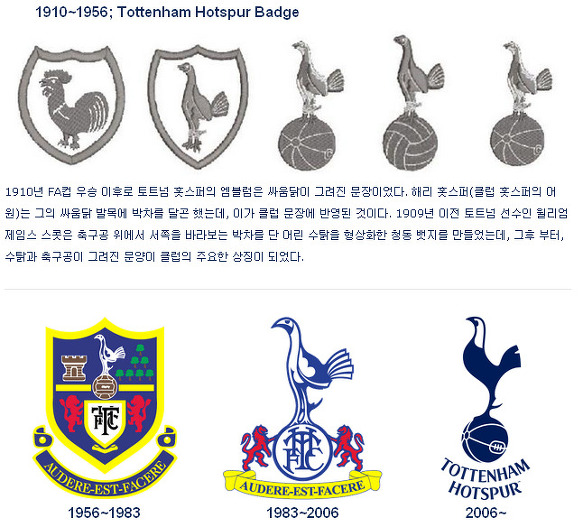

공위에 있는 새는 뭐지?
1910년 FA컵 우승 이후로 토트넘 홋스퍼의 엠블럼은 싸움닭이 그려진 문장이었다.
해리 홋스퍼는 그의 싸움닭 발목에 박차를 달곤 했는데, 이것이 클럽 문장에 반영된 것이다.
토트넘의 상징인 닭은 일명 게임콕(싸움닭) 또는 코크럴(싸우기를 좋아하는 젊은이)이라 불리는 닭이다.
1909년 이전 토트넘 선수인 윌리엄 제임스 스콧은 축구공 위에서 서쪽을 바라보는 박차를 단 어린 수탉을 형상화한 청동 뱃지를 만들었는데, 그 후부터, 수탉과 축구공이 그려진 문양이 클럽의 주요한 상징이 되었다.
초기에는 방패안에 닭을 그려 넣었으며 1966년 부터 현재까지 축구공 위에 서있는 닭의 모습으로 바뀌었다.
이 엠블럼의 의미는 싸움닭처럼 공격축구를 하자는 뜻이다.
 옆의 사진은 토트넘의 엠블럼 변화이다.